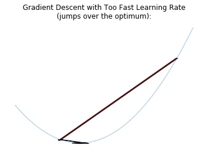
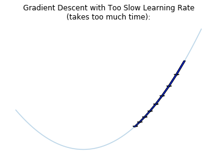
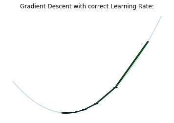
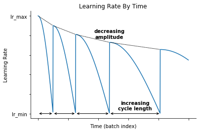
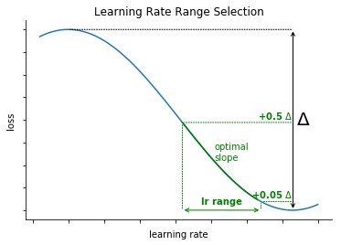
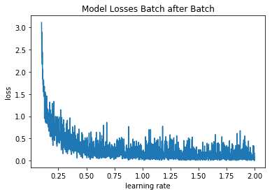
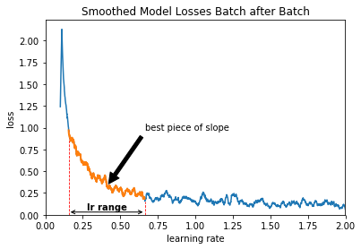
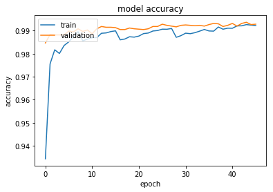
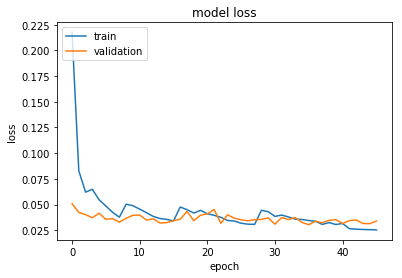

Cyclical learning rates with Tensorflow Implementation
- 21 May 2019
- Manuel Capel
- Tags: deep learning Tensorflow
The learning rate is considered as the most important hyperparameter in a neural network (Bengio 2012). Finding the right one is thus quite crucial. Even better is to find a good learning rate scheduling: modifying the learning rate during the training so that the model has a bigger chance to reach a better optimum. The goal of this article is to describe a learning rate scheduling that seems to work well, along its Tensorflow implementation and an example with a simple CNN on the MNIST dataset.
Short summary of the method
A too big learning rate makes the model parameters react too much to the errors during the training, so that the model will probably jump over an optimum. On the other hand, a too slow learning rate makes the model move too slowly toward an optimum. So we have to find first a good range of learning rates between those two extremes.
  
Then we train the model by decreasing “cosine-like” the learning rate after each batch and re-starting at the end of the cycle, as described in Loshchilov & Hutter 2017. Each cycle is longer as the previous one, but in addition to the original method, the amplitude of this cosine function decreases after each cycle:

Finding the optimal learning rate range
Principle
For this, we use a method first described in Smith 2015, section 3.2.2. It consists in incrementing the learning rate after each batch. The loss begins to drop, and at some point starts to stabilize or even increase. The learning rate range corresponding to the biggest slope before the loss reaches its minimum (or stabilizes) is considered as optimal.

The novelty here is to select the learning rate range automatically. For this we take the range corresponding to the loss between \(min + 0.05.\Delta\) and \(min + 0.5.\Delta\) before the minimum is reached.
Implementation
We define then a keras Callback which job is to increase the learning rate batch after batch between a given minimum and maximum:
1
2
3
4
5
6
7
8
9
10
11
12
13
14
15
16
17
18
19
20
21
22
23
24
25
26
27
28
29
class LrRangeFinder(tf.keras.callbacks.Callback):
def __init__(self, start_lr, end_lr):
super().__init__()
self.start_lr = start_lr
self.end_lr = end_lr
def on_train_begin(self, logs={}):
self.lrs = []
self.losses = []
tf.keras.backend.set_value(
self.model.optimizer.lr,
self.start_lr
)
n_steps = self.params['steps'] \
if self.params['steps'] is not None \
else round(self.params['samples'] \
/ self.params['batch_size'])
n_steps *= self.params['epochs']
self.by = (self.end_lr - self.start_lr) / n_steps
def on_batch_end(self, batch, logs={}):
lr = float(tf.keras.backend.get_value(
self.model.optimizer.lr))
self.lrs.append(lr)
self.losses.append(logs.get('loss'))
lr += self.by
tf.keras.backend.set_value(self.model.optimizer.lr, lr)
Basically it computes n_steps, the number of steps (batches) that the model will go through during this training (l.12) and by (l.14), the value by which the learning rate will be incremented after each batch (l.21)
As a model, we take a simple CNN described in the Keras documentation:
1
2
3
4
5
6
7
8
9
10
11
12
13
14
15
16
17
18
19
20
21
22
23
24
25
26
27
28
29
30
31
32
33
34
35
# Initializers set for better reproducibility
seed = 0
glorot_initializer = tf.keras.initializers.glorot_normal(
seed=seed
)
he_initializer = tf.keras.initializers.he_uniform(
seed=seed
)
def get_model_cnn_0():
model = tf.keras.models.Sequential()
model.add(tf.keras.layers.Conv2D(32,
kernel_size=(3, 3),
activation='relu',
input_shape=input_shape,
kernel_initializer=he_initializer,
bias_initializer='zeros'))
model.add(tf.keras.layers.Conv2D(64, (3, 3),
activation='relu',
kernel_initializer=he_initializer,
bias_initializer='zeros'))
model.add(tf.keras.layers.MaxPooling2D(pool_size=(2, 2)))
model.add(tf.keras.layers.Dropout(0.25))
model.add(tf.keras.layers.Flatten())
model.add(tf.keras.layers.Dense(128,
activation='relu',
kernel_initializer=he_initializer,
bias_initializer='zeros'))
model.add(tf.keras.layers.Dropout(0.5))
model.add(tf.keras.layers.Dense(num_classes,
activation='softmax',
kernel_initializer=glorot_initializer,
bias_initializer='zeros'))
return model
And we run it over one epoch with increasing learning rate between 0.1 and 2 (reasonable range since an Adadelta optimizer is used):
1
2
3
4
5
6
7
8
9
10
11
12
13
epochs = 1
lrRangeFinder = LrRangeFinder(start_lr=0.1, end_lr=2)
model_cnn_0 = get_model_cnn_0()
model_cnn_0.compile(
loss=tf.keras.losses.categorical_crossentropy,
optimizer=tf.keras.optimizers.Adadelta(),
metrics=['accuracy']
)
model_cnn_0.fit(X_train, y_train,
epochs=epochs,
batch_size=batch_size,
callbacks=[lrRangeFinder])
And we get this:

Then we apply following algorithm to find the extrema of the learning rate range:
1
2
3
4
5
6
7
8
9
10
11
12
13
14
15
16
17
18
19
20
21
22
23
24
25
26
27
28
29
30
31
32
33
34
35
36
37
38
39
40
def smooth(y, box_pts):
"""smoothes an array by taking the average of the
`box_pts` point around each point"""
box = np.ones(box_pts)/box_pts
y_smooth = np.convolve(y, box, mode='same')
return y_smooth
smoothed_losses = smooth(lrRangeFinder.losses, 20)
# Sub-sample the (smoothed) losses between the point where
# it reaches its max and the point where it reaches its min
min_ = np.argmin(smoothed_losses)
max_ = np.argmax(smoothed_losses)
smoothed_losses_ = smoothed_losses[min_: max_]
smoothed_diffs = smooth(np.diff(smoothed_losses), 20)
# index where the (smoothed) loss starts to decrease:
min_ = np.argmax(smoothed_diffs <= 0)
# index where the (smoothed) loss restarts to increase:
max_ = np.argmax(smoothed_diffs >= 0)
# handle max_ == 0 when it never restarts to increase:
max_ = max_ if max_ > 0 else smoothed_diffs.shape[0]
# Restrain the window to the min_, max_ interval
smoothed_losses_ = smoothed_losses[min_: max_]
# Take min and max loss in this restrained window
min_smoothed_loss_ = min(smoothed_losses_[:-1])
max_smoothed_loss_ = max(smoothed_losses_[:-1])
delta = max_smoothed_loss_ - min_smoothed_loss_
lr_arg_max = np.argmax(smoothed_losses_ <= \
min_smoothed_loss_ + .05 * delta)
lr_arg_min = np.argmax(smoothed_losses_ <= \
min_smoothed_loss_ + .5 * delta)
lr_arg_min += min_
lr_arg_max += min_
lrs = lrRangeFinder.lrs[lr_arg_min: lr_arg_max]
lr_min, lr_max = min(lrs), max(lrs)
How we derive this learning rate range is illustrated here:

Interessingly, the optimal learning rate range found here is pretty way below 1.00, the default learning rate provided by Keras for this Adadelta optimizer.
Training with cyclical learning rate
In order to decrease cosine-wise the learning rate and restart it after each cycle as described above, we define another Keras Callback (source from Jeremy Jordan, just slightly modified to compute automatically the number of steps per epoch):
1
2
3
4
5
6
7
8
9
10
11
12
13
14
15
16
17
18
19
20
21
22
23
24
25
26
27
28
29
30
31
32
33
34
35
36
37
38
39
40
41
42
43
44
45
46
47
48
49
50
51
52
53
54
55
56
57
58
59
60
61
62
63
64
65
66
67
68
69
70
71
72
73
74
75
76
77
78
79
80
81
82
83
84
85
86
87
88
89
90
91
92
93
94
95
96
97
98
99
100
101
102
class SGDRScheduler(tf.keras.callbacks.Callback):
"""Cosine annealing learning rate scheduler with periodic restarts.
# Usage
```python
schedule = SGDRScheduler(min_lr=1e-5,
max_lr=1e-2,
lr_decay=0.9,
cycle_length=5,
mult_factor=1.5)
model.fit(X_train, Y_train,
epochs=100,
callbacks=[schedule])
```
# Arguments
min_lr: The lower bound of the learning rate range.
max_lr: The upper bound of the learning rate range.
lr_decay: Reduce the max_lr after
completion of each cycle.
Ex. To reduce the max_lr by 20%
after each cycle, set
this value to 0.8.
cycle_length: Initial number of epochs in a cycle.
mult_factor: Scale epochs_to_restart after each
full cycle completion.
# References
Original paper: http://arxiv.org/abs/1608.03983
"""
def __init__(self,
min_lr,
max_lr,
lr_decay=1,
cycle_length=10,
mult_factor=2):
self.min_lr = min_lr
self.max_lr = max_lr
self.lr_decay = lr_decay
self.batch_since_restart = 0
self.next_restart = cycle_length
self.cycle_length = cycle_length
self.mult_factor = mult_factor
self.history = {}
def clr(self):
'''Calculate the learning rate.'''
fraction_to_restart = self.batch_since_restart \
/ (self.steps_per_epoch * self.cycle_length)
lr = self.min_lr + 0.5 \
* (self.max_lr - self.min_lr) \
* (1 + np.cos(fraction_to_restart * np.pi))
return lr
def on_train_begin(self, logs={}):
'''Initialize the learning rate to the
minimum value at the start of training.'''
self.steps_per_epoch = self.params['steps'] \
if self.params['steps'] is not None \
else round(self.params['samples'] \
/ self.params['batch_size'])
logs = logs or {}
tf.keras.backend.set_value(self.model.optimizer.lr,
self.max_lr)
def on_batch_end(self, batch, logs={}):
'''Record previous batch statistics
and update the learning rate.'''
logs = logs or {}
self.history.setdefault('lr', []).append(
tf.keras.backend.get_value(
self.model.optimizer.lr
)
)
for k, v in logs.items():
self.history.setdefault(k, []).append(v)
self.batch_since_restart += 1
tf.keras.backend.set_value(
self.model.optimizer.lr,
self.clr()
)
def on_epoch_end(self, epoch, logs={}):
'''Check for end of current cycle,
apply restarts when necessary.'''
if epoch + 1 == self.next_restart:
self.batch_since_restart = 0
self.cycle_length = np.ceil(
self.cycle_length * self.mult_factor)
self.next_restart += self.cycle_length
self.max_lr *= self.lr_decay
self.best_weights = self.model.get_weights()
def on_train_end(self, logs={}):
'''Set weights to the values from the end of
the most recent cycle for best performance.'''
self.model.set_weights(self.best_weights)
And then we train the model with this Callback. We sort out 10% of the training data as validation data. Each time that the loss reaches a new minimum, we save the model (ModelCheckPoint callback). If no new minimum has been reach for 10 epochs, the training is stopped (EarlyStopping callback). The training is stopped after at most 100 epochs.
1
2
3
4
5
6
7
8
9
10
11
12
13
14
15
16
17
18
19
20
21
22
23
24
25
26
27
28
29
30
31
32
33
scheduler = SGDRScheduler(min_lr=lr_min,
max_lr=lr_max,
lr_decay=.9,
cycle_length=3,
mult_factor=1.5)
callbacks = [tf.keras.callbacks.EarlyStopping(
monitor='val_loss',
patience=10
),
tf.keras.callbacks.ModelCheckpoint(
filepath='best_model_with_cycling.h5',
monitor='val_loss',
save_best_only=True
),
scheduler]
epochs = 100
model_cnn_0 = get_model_cnn_0()
model_cnn_0.compile(
loss=tf.keras.losses.categorical_crossentropy,
optimizer=tf.keras.optimizers.Adadelta(),
metrics=['accuracy']
)
history_with_optimization = model_cnn_0.fit(
X_train, y_train,
validation_split=0.1,
epochs=epochs,
batch_size=batch_size,
callbacks=callbacks
)
The performance of the model during the training looks is following:
 
As a result, we get 0.85% misclassification rate with this method, versus 1.05% if we simply use the constant default learning rate. That an improvement of almost 20%.
Conclusion
This method for finding the optimal learning rate range combined with this cycling training seems to bring significant improvement.
Its advantage is also that it can be automated to a large part.
In this example on the MNIST data, this method out-performs the default method (with constant default learning rate) on following aspects:
- 20% better misclassification rate
- best validation loss obtained during training: 0.304 vs. 0.317
- best validation accuracy during training: 99.32% vs. 99.20%
The disadvantage of the cycling learning rate is that it took much more time to reach those better performances. With the cycling learning rate, we had to wait until epoch 23 to reach the best performance obtained by the default method (at period 8). In this case, the cycling learning rate moved slower but farer at the end.
You can check the companion colab notebook for more details, and also this blog article where a similar technique is described.